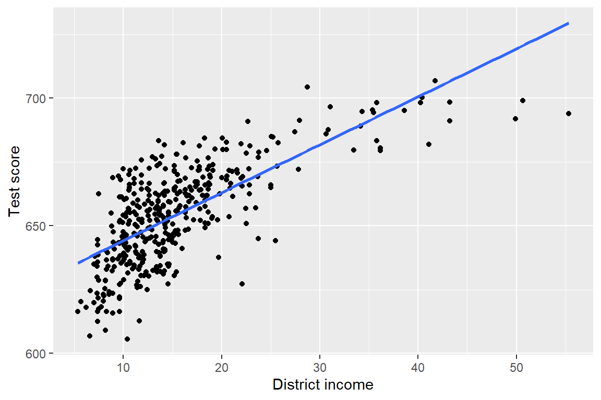
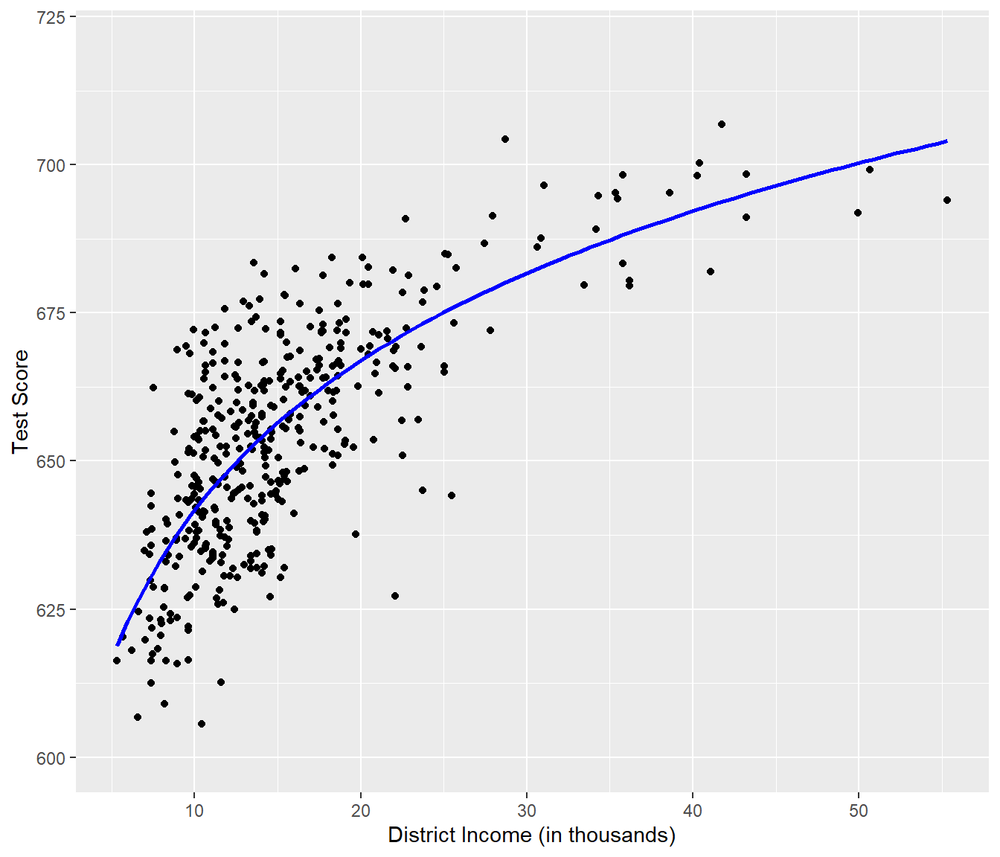
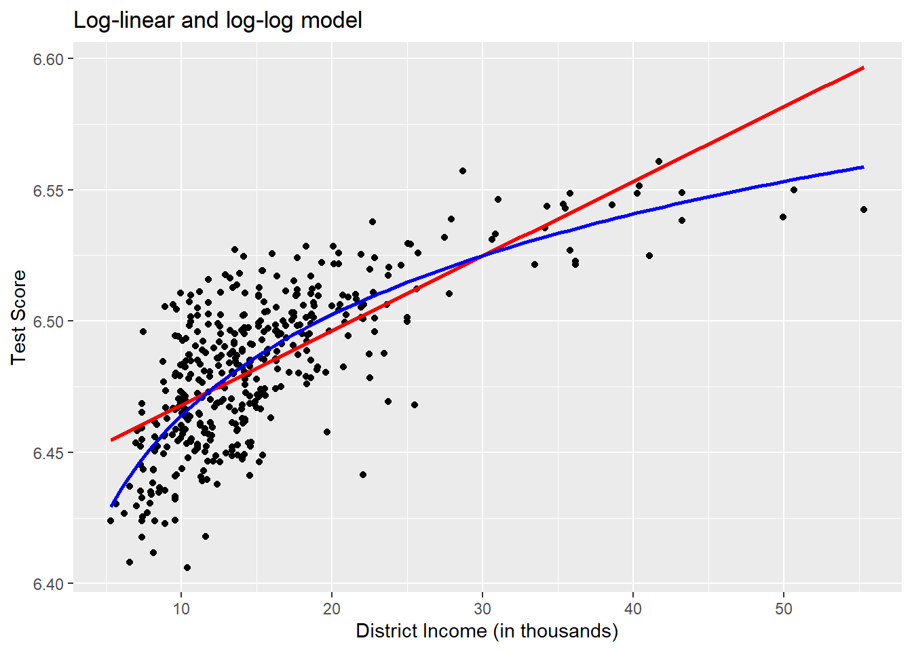

Nonlinear Regression Functions
Nonlinear Regression Function
Everything so far has been linear in the \(X'^s\)
But the linear approximation is not always a good one
The multiple regression framework can be extended to handle regression functions that nonlinear in one or more \(X\).
Outline
- Nonlinear regression functions- general comments
- Nonlinear functions of one variable
- Nonlinear functions of two variables: interaction
The TestScore- STR relation looks linear (maybe)
Code
ggplot(caschool)+aes(x=str,y=testscr)+geom_point()+
geom_smooth(method="lm",se=FALSE)+labs(x="Student teacher ratio",y="Test score")
Testscore income relationship relationship look nonlinear
Code
ggplot(caschool)+aes(x=avginc,y=testscr)+geom_point()+
geom_smooth(method="lm",se=FALSE)+labs(x="District income",y="Test score")
Code
ggplot(caschool)+aes(x=avginc,y=testscr)+ geom_point() +
geom_smooth(method="gam", formula = y ~ poly(x,2), se=FALSE) +
labs(x="District Income (in thousands)", y="Test Score")
Code
ggplot(caschool)+aes(x=avginc,y=testscr)+ geom_point() +
geom_smooth(method="gam", formula = y ~ poly(x,3), se=FALSE) +
labs(x="District Income (in thousands)", y="Test Score")
Code
ggplot(caschool)+aes(x=avginc,y=testscr)+
geom_point() +
ylim(600, 720) +
geom_smooth(method="gam", formula = y ~ poly(x,3), se=FALSE, color="red") +
geom_smooth(method="gam", formula = y ~ log(x), se=FALSE, color="blue") +
labs(x="District Income (in thousands)", y="Test Score")
Nonlinear Regression Population Regression Functions
If a relation between \(Y\) and \(X\) is nonlinear:
• The effect on \(Y\) of a change in \(X\) depends on the value of \(X\) – that is, the marginal effect of \(X\) is not constant • A linear regression is mis-specified – the functional form is wrong • The estimator of the effect on \(Y\) of \(X\) is biased – it needn’t even be right on average. • The solution to this is to estimate a regression function that is nonlinear in \(X\)
The general nonlinear population regression function
\(Y_i=f(X_{1i},X_{2i},\dots,X_{Ki})+u_i, i=1,\dots,n\)
Assumptions
- \(E(u_i\vert X_{1i}, X_{2i}, \dots, X_{ki}) = 0.\) (same), implies that \(f\) is the conditional expectation of \(Y\) given the \(X's\).
- \((X_{1i}, X_{2i}, \dots, X_{ki},Y_i)\) are i.i.d (same).
- Large outliers are unlikely, formally \(X_{1i},\dots,X_{ki}\) and \(Y_i\) have finite fourth moments. (same)
- No perfect multicollinearity. (same)
The Expected Effect on \(Y\) of a Change in \(X\) in a Nonlinear Regression Model
Consider the nonlinear regression function: \(Y_i = f(X_{1i}, X_{2i}, \dots, X_{ki}) + u_i \ , \ i=1,\dots,n,\)
where where \(f(X_{1i}, X_{2i}, \dots, X_{ki})\) is the population regression function and \(u_i\) is the error term. Denoted by \(\Delta Y\) the expected change in \(\Delta X_1\), the change is \(X_1\) while holding \((X_1,X_2, ..., X_k)\) constant. That is, the expected change in \(Y\) is the difference \(\Delta Y = f(X_1 + \Delta X_1, X_2, \cdots, X_k) - f(X_1, X_2, \cdots, X_k).\) The estimator of this unknown population difference is the difference between the predicted values for these two cases. Let \(\hat{f}(X_1, X_2, \cdots, X_k)\) be the predicted value of of \(Y\) based on the estimator of \(\hat{f}\) the population regression function.
Then the predicted change in \(Y\) is \(\Delta \widehat{Y} = \hat{f}(X_1 + \Delta X_1, X_2, \cdots, X_k) - \hat{f}(X_1, X_2, \cdots, X_k).\)
Nonlinear Functions of a Single Independent Variable
We’ll look at two complementary approaches:
Polynomials in X The population regression function is approximated by a quadratic, cubic, or higher-degree polynomial
Logarithmic transformations • Y and/or X is transformed by taking its logarithm • this gives a “percentages” interpretation that makes sense in many applications
1. Polynomials in X
Approximate the population regression function by a polynomial: \(Y_i = \beta_0 + \beta_1 X_i + \beta_2 X_i^2 + \cdots + \beta_r X_i^r + u_i.\)
• This is just the linear multiple regression model – except that the regressors are powers of \(X!\) • Estimation, hypothesis testing, etc. proceeds as in the multiple regression model using OLS • The coefficients are difficult to interpret, but the regression function itself is interpretable
Example: the TestScore – Income relation
\(Income_i\) = average district income in the \(i^{th}\) district (thousands of dollars per capita)
Quadratic specification:
\(Income_i = \beta_0 + \beta_1 Income_i + \beta_2 (Income_i)^2 + u_i\)
Cubic specification:
\(Income_i = \beta_0 + \beta_1 Income_i + \beta_2 (Income_i)^2 +\beta_3 (Income_i)^3+ u_i\)
Code
caschool<-caschool|>mutate(avginc2=avginc^2, avginc3=avginc^3)
mod_quad<-lm(testscr~avginc+I(avginc^2),data=caschool)
modelsummary(mod_quad)| Model 1 | |
|---|---|
| (Intercept) | 607.302 |
| (3.046) | |
| avginc | 3.851 |
| (0.304) | |
| I(avginc^2) | −0.042 |
| (0.006) | |
| Num.Obs. | 420 |
| R2 | 0.556 |
| R2 Adj. | 0.554 |
| AIC | 3333.4 |
| BIC | 3349.6 |
| Log.Lik. | −1662.708 |
| F | 261.278 |
| RMSE | 12.68 |
\(\widehat{TestScore} = 607.3 + 3.85 \times income - 0.0423 \times income^2\ ?\)
Because the regression function is quadratic, this effect depends on the initial district income. We therefore consider two cases:
An increase in district income form \(10\) to \(11\) (from per capita \(\$10,000\) to \(\$11,000\))
An increase in district income from \(40\) to \(41\) (from per capita \(\$40,000\) to \(\$41,000\))
In order to obtain \(\Delta \widehat{Y}\) associated with a change in income form \(10\) to \(11\) , we use the following formula:
\(\Delta \widehat{Y} = \left(\hat{\beta}_0 + \hat{\beta}_1 \times 11 + \hat{\beta}_2 \times 11^2\right) - \left(\hat{\beta}_0 + \hat{\beta}_1 \times 10 + \hat{\beta}_2 \times 10^2\right)\)
To compute \(\widehat Y\) using R we may use predict().
Code
# set up data for prediction
new_data <- data.frame(avginc = c(10, 11))
# do the prediction
Y_hat <- predict(mod_quad, newdata = new_data)
# compute the difference
diff(Y_hat) 2
2.962517 Code
# set up data for prediction
new_data <- data.frame(avginc = c(40, 41))
# do the prediction
Y_hat <- predict(mod_quad, newdata = new_data)
# compute the difference
diff(Y_hat) 2
0.4240095 Logarithms
Another way to specify a nonlinear regression function is to use the natural logarithm of \(Y\) and/or \(X\). Logarithms convert changes in variables into percentage changes. This is convenient as many relationships are naturally expressed in terms of percentages.
There are three different cases in which logarithms might be used.
- Transform \(X\) with its logarithm, but \(Y\) not
- Analogously we could transform \(Y\) to its logarithm but leave \(X\) at level.
- Both \(Y\) and \(X\) are transformed to their logarithms.
The interpretation of the regression coefficients is different in each case.
The regression model then is \(Y_i = \beta_0 + \beta_1 \times \ln(X_i) + u_i \text{, } i=1,...,n.\)
Code
lin_log<-lm(testscr~log(avginc),data=caschool)
modelsummary(lin_log)| Model 1 | |
|---|---|
| (Intercept) | 557.832 |
| (4.200) | |
| log(avginc) | 36.420 |
| (1.571) | |
| Num.Obs. | 420 |
| R2 | 0.563 |
| R2 Adj. | 0.561 |
| AIC | 3325.4 |
| BIC | 3337.5 |
| Log.Lik. | −1659.690 |
| F | 537.444 |
| RMSE | 12.59 |
\(\widehat{TestScore} = 557.8 + 36.42 \times \ln(income).\)
Code
ggplot(caschool)+aes(x=avginc,y=testscr)+
geom_point() +
ylim(600, 720) +
geom_smooth(method="gam", formula = y ~ log(x), se=FALSE, color="blue") +
labs(x="District Income (in thousands)", y="Test Score")
We can interpret \(\beta_1\) as follows: a \(1\%\) increase in income is associated with an increase in test scores of \(0.01 \times 36.42 = 0.36\)
| Change in income (\(\$1000\)) | \(\Delta{Testscore}\) |
|---|---|
| from 5 to 6 | 3.4 |
| from 25 to 26 | 1.7 |
| from 45 to 46 | 0 |
- The effect of a change in income is greater at low than high income levels (perhaps, a declining marginal benefit of an increase in school budgets?)
Caution! What is the effect of a change from 65 to 66? Don’t extrapolate outside the range of the data!
Estimating a cubic function
Code
library(estimatr)
#library(help="estimatr")
mod_cubic<-lm(testscr~avginc+avginc2+avginc3,data=caschool)
mod_cub_r<-lm_robust(testscr~avginc+avginc2+avginc3,data=caschool)
modelsummary(mod_cub_r)| Model 1 | |
|---|---|
| (Intercept) | 600.079 |
| (5.212) | |
| avginc | 5.019 |
| (0.733) | |
| avginc2 | −0.096 |
| (0.031) | |
| avginc3 | 0.001 |
| (0.000) | |
| Num.Obs. | 420 |
| R2 | 0.558 |
| AIC | 3333.3 |
| BIC | 3353.5 |
| RMSE | 12.65 |
Testing the null hypothesis of linearity, against the alternative that the population regression is quadratic and/or cubic, that is, it is a polynomial of degree up to 3:
\(H_0\): pop’n coefficients on Income2 and Income3 = 0 \(H_1\): at least one of these coefficients is nonzero.
Code
library(car)
linearHypothesis(mod_cub_r, c("avginc2=0", "avginc3=0"))Linear hypothesis test
Hypothesis:
avginc2 = 0
avginc3 = 0
Model 1: restricted model
Model 2: testscr ~ avginc + avginc2 + avginc3
Res.Df Df Chisq Pr(>Chisq)
1 418
2 416 2 67.458 2.247e-15 ***
---
Signif. codes: 0 '***' 0.001 '**' 0.01 '*' 0.05 '.' 0.1 ' ' 1Code
linearHypothesis(mod_cubic, c("avginc2=0", "avginc3=0"))Linear hypothesis test
Hypothesis:
avginc2 = 0
avginc3 = 0
Model 1: restricted model
Model 2: testscr ~ avginc + avginc2 + avginc3
Res.Df RSS Df Sum of Sq F Pr(>F)
1 418 74905
2 416 67170 2 7735.5 23.954 1.424e-10 ***
---
Signif. codes: 0 '***' 0.001 '**' 0.01 '*' 0.05 '.' 0.1 ' ' 1The hypothesis that the population regression is linear is rejected at the 1% significance level against the alternative that it is a polynomial of degree up to 3.
Summary Polynomial Regression Function
\(Y_i = \beta_0 + \beta_1 X_i + \beta_2 X_i^2 + \cdots + \beta_r X_i^r + u_i.\)
Estimation: by OLS after defining new regressors
Coefficients have complicated interpretations
To interpret the estimated regression function:
plot predicted values as a function of \(X\)
compute predicted \(\frac{\Delta Y}{\Delta X}\) at different values of \(X\)
Hypotheses concerning degree r can be tested by t- and F-tests on the appropriate (blocks of) variable(s).
Choice of degree \(r\)
plot the data; t- and F-tests, check sensitivity of estimated effects; judgment. • Or use model selection criteria (later)
The three log regression specifications
Logarithms can be used to transform the dependent variable \(Y\) or the independent variable \(X\), or both (the variable being transformed must be positive). The following table summarizes these three cases and the interpretation of the regression coefficient β1. In each case, β1, can be estimated by applying OLS after taking the logarithm(s) of the dependent and/or the independent variable.
| Case | Model Specification | nterpretation of \(beta_1\) |
|---|---|---|
| 1 | \(Y_i = \beta_0 + \beta_1 \ln(X_i) + u_i\) | A \(1 \%\) increase in \(X\) is associated with a change in \(Y\) of \(0.01 \times \beta_1\) |
| 2 | \(\ln(Y_i) = \beta_0 + \beta_1 X_i + u_i\) | A change in \(X\) by one unit \(\Delta X=1\) is associated with a 100×β1% change in \(Y\) |
| 3 | \(\ln(Y_i) = \beta_0 + \beta_1 \ln(X_i) + u_i\) | A \(1 \%\) change in \(X\) is associated with a β1% change in \(Y\), so β1 is the elasticity of \(Y\) with respect to \(X\). |
Interpretation of each of these different using before and after concept.
\(\widehat{TestScore} = 557.8 + 36.42 \times \ln(income).\) A \(1\%\) increase in incomes is associated with a 0.01*36.42=0.3642 increase in test test score.
Code
#| fig-width: 6
#| fig-height: 5
ggplot(caschool)+aes(x=log(avginc),y=testscr)+
geom_point() +
ylim(600, 720) +
geom_smooth(method="gam", formula = y ~ log(x), se=FALSE, color="blue") +
labs(x="District Income (in thousands)", y="Test Score")Case II: \(Y\) is in Logarithm,\(X\) is not
Code
LogLinear_model <- lm(log(testscr) ~ avginc, data = caschool)
modelsummary(LogLinear_model)| Model 1 | |
|---|---|
| (Intercept) | 6.439 |
| (0.002) | |
| avginc | 0.003 |
| (0.000) | |
| Num.Obs. | 420 |
| R2 | 0.498 |
| R2 Adj. | 0.497 |
| AIC | 3382.3 |
| BIC | 3394.4 |
| Log.Lik. | 1034.680 |
| F | 415.020 |
| RMSE | 0.02 |
\(\widehat{\ln(TestScore)} = 6.439 + 0.00284 \times income.\)
An increase in district income by \(\$1000\) is expected to increase test scores by \(100\times 0.00284 \% = 0.284\%\).
Case 3: log of \(Y\) and log of \(X\)
The log-log regression model is \(\ln(Y_i) = \beta_0 + \beta_1 \times \ln(X_i) + u_i, \ \ i=1,\dots,n.\)
Code
LogLog_model <-lm(log(testscr)~log(avginc),data=caschool)
modelsummary(LogLog_model)| Model 1 | |
|---|---|
| (Intercept) | 6.336 |
| (0.006) | |
| log(avginc) | 0.055 |
| (0.002) | |
| Num.Obs. | 420 |
| R2 | 0.558 |
| R2 Adj. | 0.557 |
| AIC | 3329.2 |
| BIC | 3341.3 |
| Log.Lik. | 1061.220 |
| F | 527.238 |
| RMSE | 0.02 |
\(\widehat{\ln(TestScore)} = 6.336 + 0.0554 \times \ln(income).\)
A \(1\%\) increase in \(X\) is associated with an estimated \(\hat\beta_1 \%\) change in \(Y\).
Code
ggplot(caschool)+aes(x=avginc,y=log(testscr))+
geom_point() +
geom_smooth(method="gam", formula = y ~ x, se=FALSE, color="red") +
geom_smooth(method="gam", formula = y ~ log(x), se=FALSE, color="blue") +
labs(x="District Income (in thousands)", y="Test Score", title="Log-linear and log-log model")
Summary: Logarithmic transformations
- Three cases, differing in whether \(Y\) and/or \(X\) is transformed by taking logarithms.
- The regression is linear in the new variable(s) \(ln(Y)\) and/or \(ln(X)\), and the coefficients can be estimated by OLS.
- Hypothesis tests and confidence intervals are now implemented and interpreted as usual.
- The interpretation of \(\beta_1\) differs from case to case.
- Choice of specification should be guided by judgment (which interpretation makes the most sense in your application?), tests, and plotting predicted values.
Interactions Between Independent Variables
There are research questions where it is interesting to learn how the effect on of a change in an independent variable depends on the value of another independent variable. For example, we may ask if districts with many English learners benefit differentially from a decrease in class sizes to those with few English learning students. To assess this using a multiple regression model, we include an interaction term. We consider three cases:
Interactions between two binary variables.
Interactions between a binary and a continuous variable.
Interactions between two continuous variables.
The following subsections discuss these cases briefly and demonstrate how to perform such regressions in R.
Interactions Between Binary and Continuous Variables
An interaction term like \(X_i \times D_i\)(where \(X_i\) is continuous and \(D_i\) is binary) allows for the slope to depend on the binary variable. There are three possibilities:
1.Different intercept and same slope:
\(Y_i = \beta_0 + \beta_1 X_i + \beta_2 D_i + u_i\)
2.Different intercept and different slope:
\(Y_i = \beta_0 + \beta_1 X_i + \beta_2 D_i + \beta_3 \times (X_i \times D_i) + u_i\)
3.Same intercept and different slope:
\(Y_i = \beta_0 + \beta_1 X_i + \beta_2 (X_i \times D_i) + u_i\)
Interactions Between Two Binary Variables
Take two binary variables \(D_1\) and \(D_2\) and the population regression model \(Y_i = \beta_0 + \beta_1 \times D_{1i} + \beta_2 \times D_{2i} + u_i.\) Now assume that
$$\[\begin{align*}
Y_i=& \, \ln(Earnings_i),\\
D_{1i} =& \,
\begin{cases}
1 & \text{if $i^{th}$ person has a college degree,} \\
0 & \text{else}.
\end{cases} \\
D_{2i} =& \,
\begin{cases}
1 & \text{if $i^{th}$ person is female,} \\
0 & \text{if $i^{th}$ person is male}.
\end{cases}
\end{align*}\]$$
We know that \(\beta_1\) measures the average difference in \(\ln(Earnings)\) between individuals with and without a college degree and $\beta_2$ is the gender differential in \(\ln(Earnings)\) , ceteris paribus. This model does not allow us to determine if there is a gender specific effect of having a college degree and, if so, how strong this effect is.
It is easy to come up with a model specification that allows to investigate this:
\(Y_i = \beta_0 + \beta_1 \times D_{1i} + \beta_2 \times D_{2i} + \beta_3 \times (D_{1i} \times D_{2i}) + u_i\)
\((D_{1i} \times D_{2i})\) is called an interaction term and \(\beta_3\) measures the difference in the effect of having a college degree for women versus men.
A Method for Interpreting Coefficients in Regression with Binary Variables
Compute expected values of \(Y\) for each possible set described by the set of binary variables. Compare the expected values. The coefficients can be expressed either as expected values or as the difference between at least two expected values. Following this idea:
\(\begin{align*} E(Y_i\vert D_{1i}=0, D_{2i} = d_2) =& \, \beta_0 + \beta_1 \times 0 + \beta_2 \times d_2 + \beta_3 \times (0 \times d_2) \\=& \, \beta_0 + \beta_2 \times d_2.\end{align*}\)
If \(D_{1i}\) switches from \(0\) to \(1\) we obtain
\(\begin{align*}E(Y_i\vert D_{1i}=1, D_{2i} = d_2) =& \, \beta_0 + \beta_1 \times 1 + \beta_2 \times d_2 + \beta_3 \times (1 \times d_2) \\=& \, \beta_0 + \beta_1 + \beta_2 \times d_2 + \beta_3 \times d_2.\end{align*}\) Hence the overall effect is
\(E(Y_i\vert D_{1i}=1, D_{2i} = d_2) - E(Y_i\vert D_{1i}=0, D_{2i} = d_2) = \beta_1 + \beta_3 \times d_2\)
Application to the Student-Teacher Ratio and the Percentage of English Learners
Now let \[\begin{align*} HiSTR =& \, \begin{cases} 1, & \text{if $STR \geq 20$} \\ 0, & \text{else}, \end{cases} \\ \\ HiEL =& \, \begin{cases} 1, & \text{if $PctEL \geq 10$} \\ 0, & \text{else}. \end{cases} \end{align*}\]
Code
# append HiSTR to CASchools
caschool$HiSTR <- as.numeric(caschool$str >= 20)
# append HiEL to CASchools
caschool$HiEL <- as.numeric(caschool$el_pct >= 10)We can estimate \(\begin{align} TestScore = \beta_0 + \beta_1 \times HiSTR + \beta_2 \times HiEL + \beta_3 \times (HiSTR \times HiEL) + u_i. \tag{8.1} \end{align}\)
Code
# estimate the model with a binary interaction term
bi_model <- lm(testscr ~ HiSTR * HiEL, data = caschool)
modelsummary(bi_model)| Model 1 | |
|---|---|
| (Intercept) | 664.143 |
| (1.315) | |
| HiSTR | −1.908 |
| (2.234) | |
| HiEL | −18.163 |
| (2.150) | |
| HiSTR × HiEL | −3.494 |
| (3.222) | |
| Num.Obs. | 420 |
| R2 | 0.296 |
| R2 Adj. | 0.290 |
| AIC | 3529.4 |
| BIC | 3549.6 |
| Log.Lik. | −1759.723 |
| F | 58.179 |
| RMSE | 15.97 |
Empirical
The estimated regression model is \(\widehat{TestScore} = \underset{(1.39)}{664.1} - \underset{(1.93)}{1.9} \times HiSTR - \underset{(2.33)}{18.3} \times HiEL - \underset{(3.12)}{3.3} \times (HiSTR \times HiEL)\) and it predicts that the effect of moving from a school district with a low student-teacher ratio to a district with a high student-teacher ratio, depending on high or low percentage of english learners is \(-1.9-3.3\times HiEL\) . So for districts with a low share of english learners (\(HiEL = 0\)), the estimated effect is a decrease of \(1.9\) points in test scores while for districts with a large fraction of English learners (\(HiEL = 1\)), the predicted decrease in test scores amounts to \(1.9 + 3.3 = 5.2\) points.
Code
# estimate means for all combinations of HiSTR and HiEL
# 1.
predict(bi_model, newdata = data.frame("HiSTR" = 0, "HiEL" = 0)) 1
664.1433 Code
# 2.
predict(bi_model, newdata = data.frame("HiSTR" = 0, "HiEL" = 1)) 1
645.9803 Code
# 3.
predict(bi_model, newdata = data.frame("HiSTR" = 1, "HiEL" = 0)) 1
662.2354 Code
# 4.
predict(bi_model, newdata = data.frame("HiSTR" = 1, "HiEL" = 1)) 1
640.5782 \(\begin{align*} \widehat{TestScore} = \hat\beta_0 = 664.1 \quad &\Leftrightarrow \quad HiSTR = 0, \, HIEL = 0\\ \widehat{TestScore} = \hat\beta_0 + \hat\beta_2 = 664.1 - 18.3 = 645.8 \quad &\Leftrightarrow \quad HiSTR = 0, \, HIEL = 1\\ \widehat{TestScore} = \hat\beta_0 + \hat\beta_1 = 664.1 - 1.9 = 662.2 \quad &\Leftrightarrow \quad HiSTR = 1, \, HIEL = 0\\ \widehat{TestScore} = \hat\beta_0 + \hat\beta_1 + \hat\beta_2 + \hat\beta_3 = 664.1 - 1.9 - 18.3 - 3.3 = 640.6 \quad &\Leftrightarrow \quad HiSTR = 1, \, HIEL = 1 \end{align*}\)
Interactions Between a Continuous and a Binary Variable
Now let \(X_i\) denote the years of working experience of person \(i\), which is a continuous variable. We have \(\begin{align*} Y_i =& \, \ln(Earnings_i), \\ \\ X_i =& \, \text{working experience of person }i, \\ \\ D_i =& \, \begin{cases} 1, & \text{if $i^{th}$ person has a college degree} \\ 0, & \text{else}. \end{cases} \end{align*}\)
The baseline model thus is \(Y_i = \beta_0 + \beta_1 X_i + \beta_2 D_i + u_i,\) With interaction \(Y_i = \beta_0 + \beta_1 X_i + \beta_2 D_i + \beta_3 (X_i \times D_i) + u_i.\)
Here, \(\beta_3\) is the expected difference in the effect of an additional year of work experience for college graduates versus non-graduates. Another possible specification is \(Y_i = \beta_0 + \beta_1 X_i + \beta_2 (X_i \times D_i) + u_i.\)
This model states that the expected impact of an additional year of work experience on earnings differs for college graduates and non-graduates but that graduating on its own does not increase earnings.
Application to the Student-Teacher Ratio and the Percentage of English Learners
\(\widehat{TestScore_i} = \beta_0 + \beta_1 \times str + \beta_2 \times HiEL_i + \beta_2 (str \times HiEL_i) + u_i.\)
\(\widehat{TestScore} = \underset{(11.87)}{682.2} - \underset{(0.59)}{0.97} \times size + \underset{(19.51)}{5.6} \times HiEL - \underset{(0.97)}{1.28} \times (size \times HiEL).\)
For \(HiEL=0\), \(\widehat{TestScore} = 682.2 - 0.97\times str.\) For districts with higher percentage of english learners \(\begin{align*} \widehat{TestScore} =& \, 682.2 + 5.6 - 0.97\times str - 1.28 \times str \\ =& \, 687.8 - 2.25 \times str. \end{align*}\)
Interaction plot
Code
library(interactions)
bci_model <- lm(testscr ~ str + HiEL + str* HiEL, data = caschool)
interact_plot(bci_model, pred = str, modx = HiEL,plot.points = TRUE)Interaction between two continuous random variables
\(\Delta Y_i = \beta_0 + \beta_1 \times X_{1i} + \beta_2 \times X_{2i} + \beta_3 \times (X_{1i} \times X_{2i}) + u_i\) And we find effect on \(Y\) of \(X_1\) for a given \(X_2\) \(\frac{\Delta Y}{\Delta X_1} = \beta_1 + \beta_3 X_2.\) and vice versa \(\frac{\Delta Y}{\Delta X_2} = \beta_2 + \beta_3 X_1\)
Code
# estimate regression model including the interaction between 'el_pct' and 'str'
cci_model <- lm(testscr ~ str + el_pct + el_pct * str, data = caschool)
interact_plot(cci_model, pred = str, modx = el_pct,plot.points = TRUE)\(\widehat{TestScore} = \underset{(11.76)}{686.3} - \underset{(0.59)}{1.12} \times STR - \underset{(0.37)}{0.67} \times PctEL + \underset{(0.02)}{0.0012} \times (STR\times PctEL).\)
Nonlinear Effect of the str on testscr
\(\begin{align} TestScore_i =& \beta_0 + \beta_1 size_i + \beta_4 english_i + \beta_9 lunch_i + u_i \\ TestScore_i =& \beta_0 + \beta_1 size_i + \beta_4 english_i + \beta_9 lunch_i + \beta_{10} \ln(income_i) + u_i \\ TestScore_i =& \beta_0 + \beta_1 size_i + \beta_5 HiEL_i + \beta_6 (HiEL_i\times size_i) + u_i \\ TestScore_i =& \beta_0 + \beta_1 size_i + \beta_5 HiEL_i + \beta_6 (HiEL_i\times size_i) + \beta_9 lunch_i + \beta_{10} \ln(income_i) + u_i \\ TestScore_i =& \beta_0 + \beta_1 size_i + \beta_2 size_i^2 + \beta_5 HiEL_i + \beta_9 lunch_i + \beta_{10} \ln(income_i) + u_i \\ TestScore_i =& \beta_0 + \beta_1 size_i + \beta_2 size_i^2 + \beta_3 size_i^3 + \beta_5 HiEL_i + \beta_6 (HiEL\times size) \\ &+ \beta_7 (HiEL_i\times size_i^2) + \beta_8 (HiEL_i\times size_i^3) + \beta_9 lunch_i + \beta_{10} \ln(income_i) + u_i \\ TestScore_i =& \beta_0 + \beta_1 size_i + \beta_2 size_i^2 + \beta_3 size_i^3 + \beta_4 english + \beta_9 lunch_i + \beta_{10} \ln(income_i) + u_i \end{align}\)
Estimate models
Code
# estimate all models
testscr_mod1 <- lm(testscr ~ str + el_pct + meal_pct, data = caschool)
testscr_mod2 <- lm(testscr ~ str + el_pct + meal_pct+log(avginc), data = caschool)
testscr_mod3 <- lm(testscr ~ str + HiEL + HiEL:str, data = caschool)
testscr_mod4 <- lm(testscr ~ str + HiEL + HiEL:str + meal_pct+log(avginc), data = caschool)
testscr_mod5 <- lm(testscr ~ str + I(str^2) + I(str^3) + HiEL + meal_pct+log(avginc), data = caschool)
testscr_mod6 <- lm(testscr ~ str + I(str^2) + I(str^3) + HiEL + HiEL:str + HiEL:I(str^2) + HiEL:I(str^3) + meal_pct + log(avginc),
data = caschool)
testscr_mod7 <- lm(testscr ~ str + I(str^2) + I(str^3) + el_pct + meal_pct + log(avginc), data = caschool)Code
library(stargazer)
library(lmtest)
library(sandwich)
# gather robust standard errors in a list
rob_se <- list(sqrt(diag(vcovHC(testscr_mod1, type = "HC1"))),
sqrt(diag(vcovHC(testscr_mod2, type = "HC1"))),
sqrt(diag(vcovHC(testscr_mod3, type = "HC1"))),
sqrt(diag(vcovHC(testscr_mod4, type = "HC1"))),
sqrt(diag(vcovHC(testscr_mod5, type = "HC1"))),
sqrt(diag(vcovHC(testscr_mod6, type = "HC1"))),
sqrt(diag(vcovHC(testscr_mod7, type = "HC1"))))
# generate a LaTeX table of regression outputsCode
models<-list(testscr_mod1,testscr_mod2,testscr_mod3,testscr_mod4,testscr_mod5,testscr_mod6,testscr_mod7)
modelsummary(models)| Model 1 | Model 2 | Model 3 | Model 4 | Model 5 | Model 6 | Model 7 | |
|---|---|---|---|---|---|---|---|
| (Intercept) | 700.150 | 658.552 | 682.246 | 653.666 | 252.051 | 122.354 | 244.809 |
| (4.686) | (7.685) | (10.511) | (8.891) | (165.824) | (192.177) | (165.932) | |
| str | −0.998 | −0.734 | −0.968 | −0.531 | 64.339 | 83.701 | 65.285 |
| (0.239) | (0.231) | (0.540) | (0.300) | (25.462) | (29.690) | (25.478) | |
| el_pct | −0.122 | −0.176 | −0.166 | ||||
| (0.032) | (0.032) | (0.032) | |||||
| meal_pct | −0.547 | −0.398 | −0.411 | −0.420 | −0.418 | −0.402 | |
| (0.022) | (0.030) | (0.029) | (0.028) | (0.029) | (0.030) | ||
| log(avginc) | 11.569 | 12.124 | 11.748 | 11.800 | 11.509 | ||
| (1.740) | (1.765) | (1.734) | (1.751) | (1.726) | |||
| HiEL | 5.639 | 5.498 | −5.474 | 816.075 | |||
| (16.718) | (9.139) | (1.032) | (434.612) | ||||
| str × HiEL | −1.277 | −0.578 | −123.282 | ||||
| (0.844) | (0.465) | (66.354) | |||||
| I(str^2) | −3.424 | −4.381 | −3.466 | ||||
| (1.294) | (1.512) | (1.295) | |||||
| I(str^3) | 0.059 | 0.075 | 0.060 | ||||
| (0.022) | (0.025) | (0.022) | |||||
| I(str^2) × HiEL | 6.121 | ||||||
| (3.353) | |||||||
| I(str^3) × HiEL | −0.101 | ||||||
| (0.056) | |||||||
| Num.Obs. | 420 | 420 | 420 | 420 | 420 | 420 | 420 |
| R2 | 0.775 | 0.796 | 0.310 | 0.797 | 0.801 | 0.803 | 0.801 |
| R2 Adj. | 0.773 | 0.794 | 0.305 | 0.795 | 0.798 | 0.799 | 0.798 |
| AIC | 3051.0 | 3010.5 | 3520.5 | 3010.1 | 3004.3 | 3006.1 | 3005.2 |
| BIC | 3071.2 | 3034.7 | 3540.7 | 3038.4 | 3036.7 | 3050.6 | 3037.5 |
| Log.Lik. | −1520.499 | −1499.253 | −1755.268 | −1498.069 | −1494.170 | −1492.061 | −1494.594 |
| F | 476.306 | 405.359 | 62.399 | 325.804 | 277.212 | 185.777 | 276.515 |
| RMSE | 9.04 | 8.59 | 15.80 | 8.57 | 8.49 | 8.45 | 8.50 |